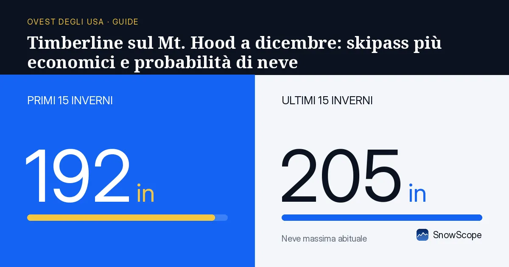

Timberline sul Mt. Hood a dicembre: skipass più economici e probabilità di neve
Timberline non è una montagna economica se ci si presenta un sabato di festa. Ma tra le località del Nordovest messe a confronto, è quella con tipicamente la neve più alta a metà dicembre, e due formule di skipass che abbassano parecchio il prezzo.
Le previsioni neve in tempo reale per Timberline Lodge Ski Area nell'app SnowScopeAltezza neve, allerte powder e mappa 3D, gratis.
Due montagne in una
Timberline parte in basso e arriva molto in alto. Secondo la nostra mappatura, gli impianti vanno da circa 3.980 ft (1.214 m) fino a 8.480 ft (2.586 m) sul versante sud del Mt. Hood, con 12 impianti e circa 33 mi (53 km) di piste. Questo dislivello conta molto a dicembre, perché la base e la vetta vivono due stagioni diverse.
In un tipico 15 dicembre, alla base ci sono 17 in (42 cm), a metà montagna, intorno a 6.230 ft (1.900 m), 52 in (132 cm), e in vetta 58 in (147 cm). Nell'11 % degli inverni passati la base era quasi spoglia in quella data, mentre la parte alta era quasi sempre sciabile.

I quattro prezzi
Per il 2026/2027, uno skipass giornaliero adulto (19-64 anni) costa 161 $ nei giorni di alta stagione e 129 $ in bassa stagione. Lo skipass pomeridiano, da mezzogiorno alla chiusura, costa 124 $ in alta stagione e 96 $ in bassa stagione. I giorni di alta stagione comprendono i weekend e il periodo festivo dal 21 dicembre al 1° gennaio.
La giornata di sci di dicembre più economica qui è quindi un pomeriggio feriale in bassa stagione a 96 $, a inizio mese. Una giornata intera durante le feste costa 161 $.

Quanto è affidabile dicembre in quota?
A metà montagna, la quota di inverni con buona copertura (media settimanale di 20 in, 50 cm, o più) è del 76 % nella prima settimana di dicembre, 74 % nella seconda e 85 % in ciascuna delle due settimane prima di Capodanno. Il 15 dicembre, il 78 % degli inverni aveva lì 20 in (50 cm) o più.
Il range è ampio. Un dicembre abbondante (un inverno su dieci) ha portato 111 in (281 cm) a metà montagna il giorno 15, uno scarso solo 10 in (26 cm). L'inverno scorso, a metà montagna, quella data era senza neve, un promemoria che il Mt. Hood può anche partire tardi.
A confronto con White Pass e Mt. Bachelor
White Pass, nello stato di Washington, vende online a partire da 69 $ in bassa stagione e 89 $ in alta, fino a 99 $ e 119 $, con 40 in (102 cm) a metà montagna in un tipico 15 dicembre e l'87 % degli inverni sopra 20 in.
Mt. Bachelor, l'altro grande vulcano dell'Oregon, secondo la nostra serie storica aveva 55 in (139 cm) a metà montagna in un tipico 15 dicembre e l'83 % degli inverni sopra 20 in. Qui non abbiamo confrontato i suoi prezzi. Se l'obiettivo è la neve alta a dicembre, Timberline e Bachelor sono vicini; se l'obiettivo è il prezzo, vince un pomeriggio in bassa stagione a Timberline o un giorno feriale prenotato presto a White Pass.
Consigli per sciatori
- Scia un pomeriggio feriale in bassa stagione per lo skipass da 96 $, ed evita il periodo dal 21 dicembre al 1° gennaio se conti ogni dollaro.
- Aspettati neve sottile o assente agli impianti più bassi a inizio dicembre: metti in conto di salire in seggiovia.
- Government Camp è l'ultima tappa prima del lodge: porta le catene e controlla le condizioni della strada sulla US-26.
- Controlla la mappa della neve nella settimana prima di partire: il Mt. Hood oscilla tra dicembri abbondanti e dicembri spogli.
Riferimenti e crediti
- Timberline Lodge, winter lift tickets 2026/2027 (official) www.timberlinelodge.com/activities/winter/lift-tickets/
- White Pass, online day tickets 2026/27 (official) skiwhitepass.com/online-day-ticket-sales
- OpenSkiMap (mapped lifts and runs) openskimap.org/
- avalanche.org, US avalanche centers and forecasts avalanche.org/
Su questi numeri
Numeri della neve: storico neve SnowScope, 46 inverni passati (1980-81 - 2025-26) alle quote indicate (base, metà, vetta), una ricostruzione della neve passata per un'area corretta per la quota (basata su ERA5-Land; Snow_Hydro 1 km per il Marocco), non i bollettini della località. Neve attuale: la mappa SnowScope. Impianti, piste e quote: mappatura OpenSkiMap. Prezzi: le pagine ufficiali elencate qui sotto, lette il 13 novembre 2026; i prezzi dinamici cambiano con la data e la domanda.
Bollettini valanghe ufficiali: avalanche.org (US national portal)
Cita questo articolo
Per ricerca, didattica o stampa: numeri e grafici sono liberamente riutilizzabili con licenza CC BY 4.0 citando così.
SnowScope (2026), Timberline sul Mt. Hood a dicembre: skipass più economici e probabilità di neve, https://snowscope.app/blog/it/2026/11/timberline-mt-hood-december-ski-on-a-budget.html, consultato il 2026-11-15
SnowScope (Atlas Labs). (2026, November 15). Timberline sul Mt. Hood a dicembre: skipass più economici e probabilità di neve. SnowScope snow reports. https://snowscope.app/blog/it/2026/11/timberline-mt-hood-december-ski-on-a-budget.html
BibTeX
@misc{snowscope2026timberlinemthooddecember,
author = {{SnowScope (Atlas Labs)}},
title = {Timberline sul Mt. Hood a dicembre: skipass più economici e probabilità di neve},
year = {2026},
month = nov,
howpublished = {\url{https://snowscope.app/blog/it/2026/11/timberline-mt-hood-december-ski-on-a-budget.html}},
note = {Published 2026-11-15 09:34 UTC; accessed 2026-11-15}
}· CC BY 4.0 · Metodi, dati e strumenti →
Timberline Lodge Ski Area: neve e temperatura per quota, quest'inverno vs lo scorso (strumenti) →
Segui Timberline Lodge Ski Area
Gratis: un messaggio quando arriva la neve e il meteo ogni mattina.